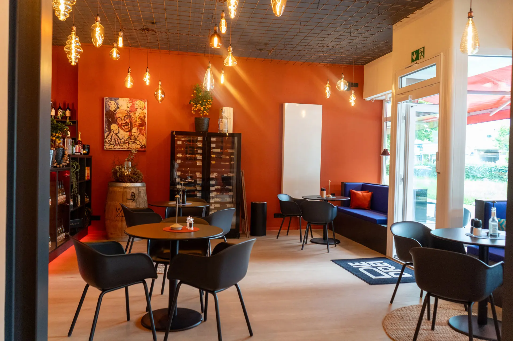
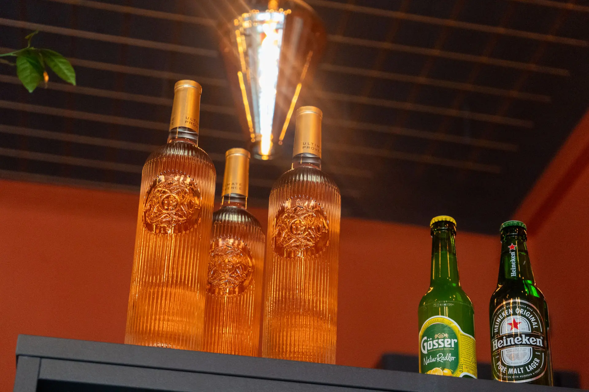
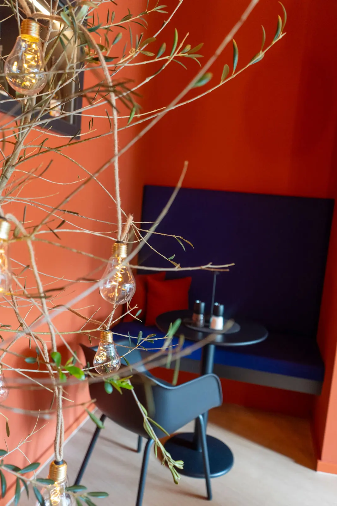
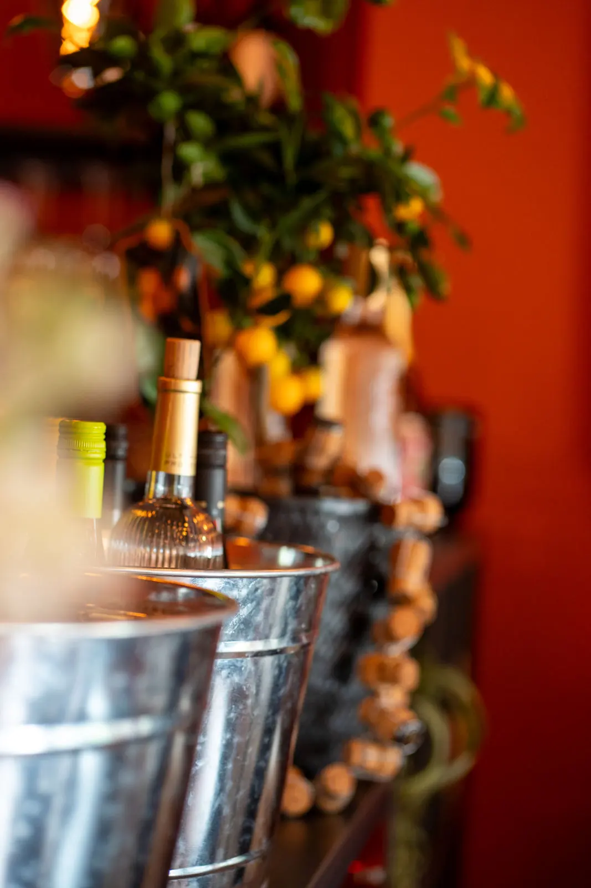
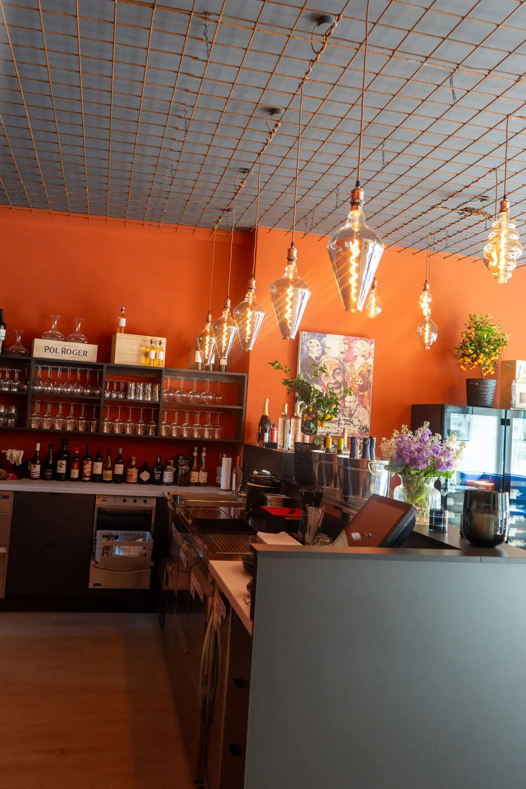
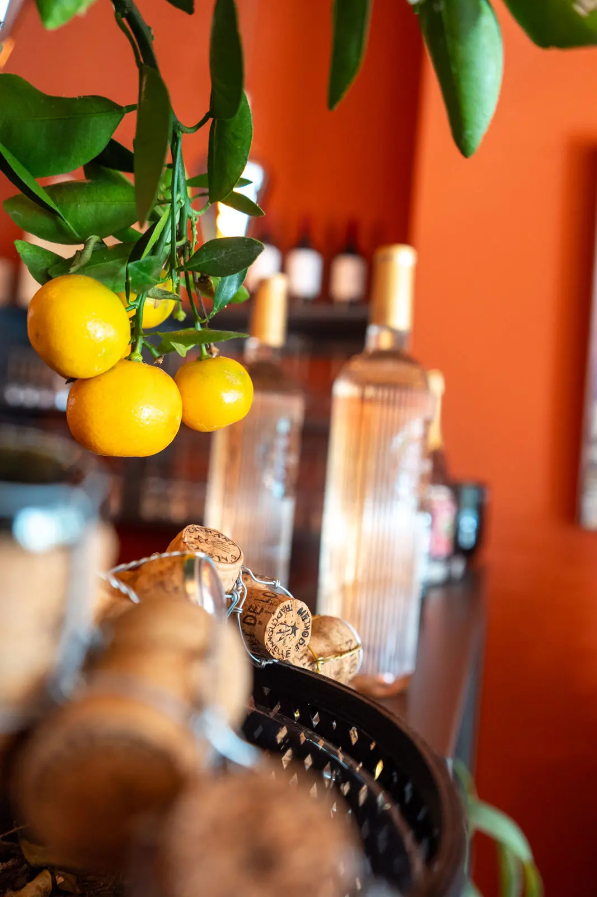
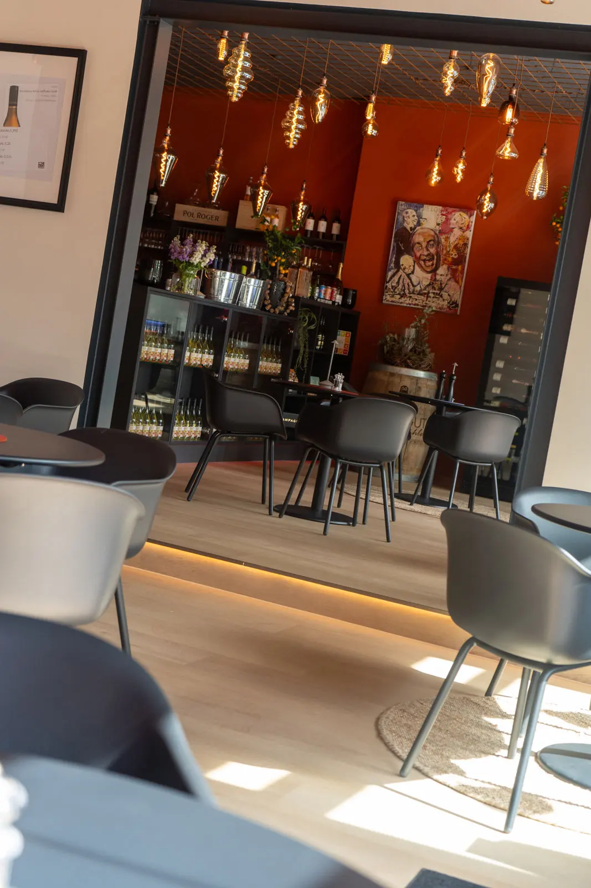
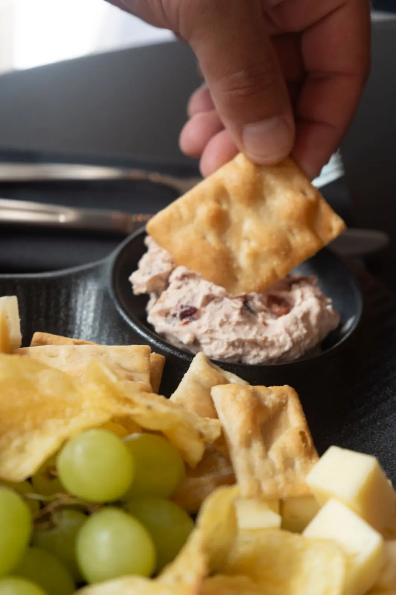
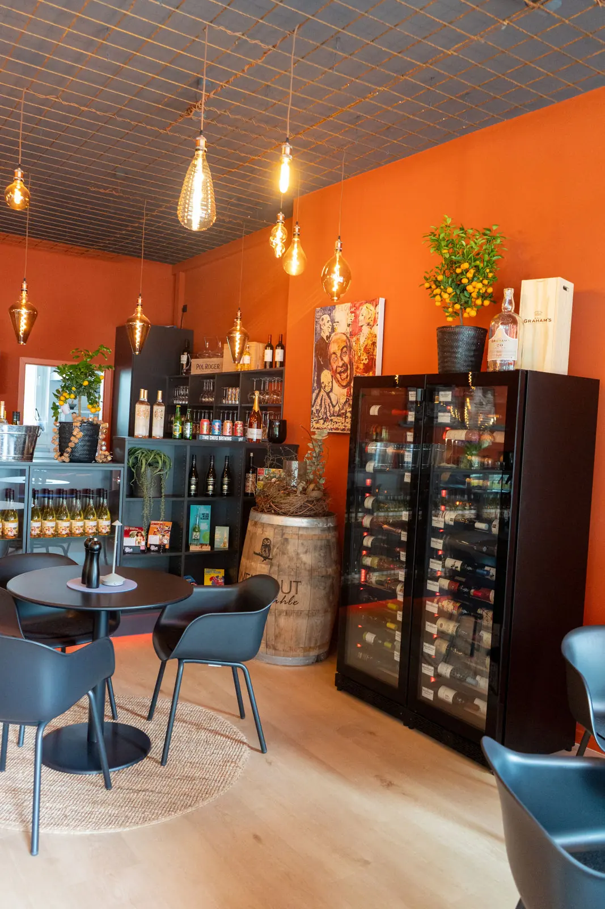
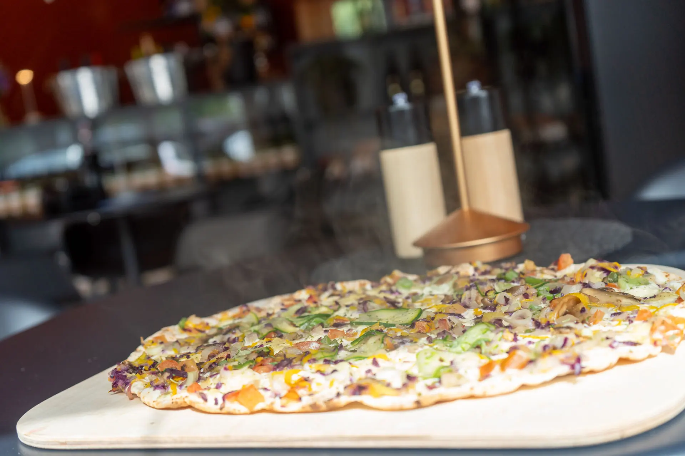

Die Bar
Einladend, gemütlich und unvergesslich.
Bei uns steht der Genuss im Vordergrund – ob Du einen langen Tag ausklingen lässt oder einen besonderen Abend suchst.
Unsere Bar
Seit 2024 am Knooper Weg in Kiel.
Gemütliche Räume, stimmungsvolle Musik und eine liebevolle Einrichtung – eine Atmosphäre, in der Du Dich sofort wohlfühlst.
Unsere Räume laden zum Verweilen ein und bieten den perfekten Rahmen für gesellige Abende. Erlebe unvergessliche Momente in bester Gesellschaft und genieße die besondere Stimmung.
Seit unserer Eröffnung im Jahr 2024 haben wir es uns zur Aufgabe gemacht, Dir unvergessliche Genussmomente zu bereiten – mit sorgfältig ausgewählten Weinen und herzlicher Gastfreundschaft.








Unsere Weine
Von Kennern für Genießer.
Jeder einzelne Wein wurde sorgfältig von unserem erfahrenen Sommelier ausgewählt – aus den besten Anbaugebieten der Welt. Ob Rotwein, Weißwein oder Rosé: Bei uns findest Du den passenden Tropfen für jeden Geschmack.
Lass Dich von unserem Team beraten und entdecke neue Lieblingsweine.
Zur WeinkarteFeiern bei uns
Du planst eine größere Feier?
Dann freuen wir uns auf Deinen Anruf.

Brotzeit & Kleinigkeiten
Für den kleinen Hunger.
Zum Wein gibt es Brotzeit mit Käse und Schinken, Flammkuchen und weitere Kleinigkeiten.
Auszug aus unserer Karte, Stand 07.05.2025. Preise laut aktueller Karte vor Ort.
Ganze Karte ansehen